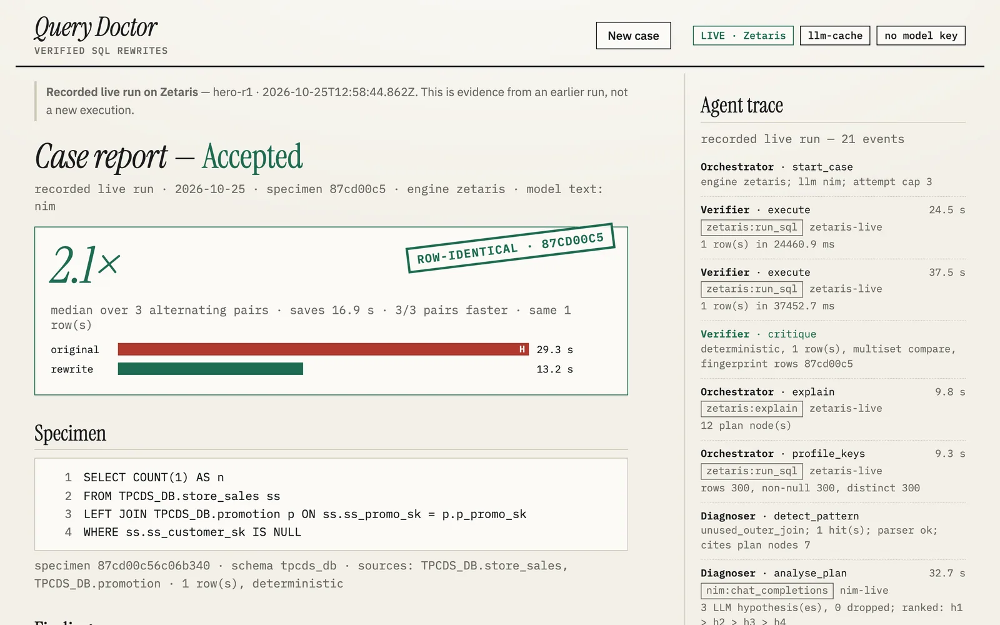

Specimen QD-2939 · recorded live 2026-10-25 12:58 UTC · Zetaris TPCDS_DBOpen Agent Hackathon 2026 · Reasoning Architecture
Findings · verified by execution
Same rows. Faster. Or the doctor won't sign.
Drop an unused LEFT JOIN and a Zetaris query runs 2.11× faster over 10 paired runs — unless the joined key has duplicates, and then the same edit quietly changes the count. Query Doctor executes both versions on the engine before anyone merges and signs only when the rows match. Wrong rewrites shipped: 0.
runs keyless in sample modeexecutes both queriesa model never decides
Case report hero-r1
recorded live · Zetaris
Specimen · the rewrite drops the struck line
SELECT COUNT(1) AS n
FROM TPCDS_DB.store_sales ss
LEFT JOIN TPCDS_DB.promotion p ON ss.ss_promo_sk = p.p_promo_sk
WHERE ss.ss_customer_sk IS NULL
The key is unique, so the join cannot change the count.
Results vs reference · median of 3 alternating pairs
original
H
29.3 srewrite13.2 s
original87cd00c5rewrite87cd00c5
ROW-IDENTICAL · 87CD00C5
Verified by Verifier — code, no model · 2.1× median, 3/3 pairs faster
recorded/live/hero-r1/case.json
2.11×
hero speedup on Zetaris
median of 10 alternating pairs, 10/10 faster, same row · DEMO.md
0
rewrites shipped with changed rows
an ACCEPT needs an identical row fingerprint · evals/results.md
6 / 15
baseline rewrites that changed rows
one plain model call, same Verifier · evals/results.md
286
tests, no keys needed
26 files · npm test
Report · hero-r1, shown twice
The report a reviewer signs, and the trace behind it.
Left, the Report screen from the frozen build replaying the recorded live run. Right, the same run's agent trace, line by line: the Verifier runs the original twice, the Diagnoser reads the plan and the key, the Rewriter proposes, the Verifier times three alternating pairs and signs.
localhost:8000/#/recorded/hero-r1

Real screen · npm start → #/recorded/hero-r1 · evidence from the recorded run, not a new execution
logs/live-hero-r1.jsonl · 21 events · 12:58:44 → 13:03:09 UTC re-set from the recorded JSONL · real timestamps · plays about 60× faster
12:58:44Orchestratorstart_caseengine zetaris; llm nim; attempt cap 3
12:59:09Verifierexecute1 row(s) in 24460.9 mszetaris:run_sql
12:59:46Verifierexecute1 row(s) in 37452.7 mszetaris:run_sql
13:00:41RewriterrewriteRemoved unnecessary LEFT JOIN to promotion since no promotion columns are referenced and p_promo_sk is unique, so the join cannot change the | sql SELECT COUNT(1) AS n FROM TPCDS_DB.store_sales ss WHERE ss.ss_customer_sk IS NULLnim:chat_completions
13:00:59Verifierexecute1 row(s) in 18157.7 mszetaris:run_sql
13:01:27Verifierexecute1 row(s) in 27703.2 mszetaris:run_sql
13:01:40Verifierexecute1 row(s) in 13228.6 mszetaris:run_sql
13:01:56Verifierexecute1 row(s) in 15470.7 mszetaris:run_sql
13:02:28Verifierexecute1 row(s) in 32414.6 mszetaris:run_sql
13:02:58Verifierexecute1 row(s) in 29309.4 mszetaris:run_sql
13:03:09Verifierexecute1 row(s) in 11562.9 mszetaris:run_sql
13:03:09VerifiercritiqueACCEPT: same 1 row(s), 2.1× median over 3 pairs
13:03:09Orchestratorcase_verdictACCEPTED
Method · four agents, one rule
A model proposes. Code decides.
Nemotron writes the diagnosis and the rewrite. The verdict, every number and every timing come from code that executes both queries on Zetaris.
Verifier
No model. It runs the original and the rewrite on the engine and refuses anything it cannot measure.
determinism pre-check — the original runs twicesame rows
schema check — columns and typesequal
row diff, or an engine-side row hash above the cap0 rows differ
alternating paired timing — ≥ 1.2×, most pairs wonsaving > 1,782.9 ms
hero-r1 · the three timed pairs, in the order they ran
pair 1
original 27.7 s
rewrite 13.2 s
pair 2
rewrite 15.5 s
original 32.4 s
pair 3
original 29.3 s
rewrite 11.6 s
xxhash64 · EXPLAIN FORMATTED · run_sql
Diagnoser
Reads the Spark plan, a pattern detector and SQL-aggregate key facts. On the hero: unused_outer_join at plan node 7, key 300 of 300 distinct.
nemotron-3-ultra-550b-a55b
Rewriter
One rewrite per hypothesis. It sees every refusal so far, with the Verifier's reason and the differing row.
nemotron-3-ultra-550b-a55b
Playbook
The Verifier writes refusals and outcomes. A candidate already refused for the same original result is answered from the ledger, not run again.
Meterless H-MEM
Retry chain
One attempt is one chunk; the carry-over is the hypothesis ledger and the refused attempts. "Correct but not faster" goes back to Diagnoser.revise; at most three attempts.
Meterless Markovian
Comments · hero-trap-r1
Three wrong rewrites, kept on the page.
Same query, one word changed: the join key is p_item_sk, which repeats. Dropping the join now changes the count. The Rewriter tried three times; the Verifier refused all three and wrote why in the margin.
key profile · p_item_sk300 rows · 291 distinct H
original fingerprinte51f9da7
attempt 1 · drop the joinROW_DIFF · row 129752
attempt 2 · LEFT SEMI JOINROW_DIFF · row 2853
attempt 3 · drop the join againrefused from the ledger
verdictNO_SAFE_REWRITE
Real screen · #/recorded/hero-trap-r1 · Attempts
Without the Verifier
Sample pack on DuckDB: one plain model call per query, no diagnosis, no memory, one attempt — scored by the same Verifier.
Query Doctor's own first rewrite on the sample traps changed rows more often — 9 of 15 runs. Every one was refused.
ΔΔΔΔΔΔΔΔΔ
▨ changed rows, refused 9 · □ other first attempts 6 · shipped with changed rows 0
Designed queries, small N — the shares are not a rate on real workloads (evals/results.md).
Four sponsors, four jobs.
Zetaris
The engine both queries run on, over JDBC to the local platform: run_sql, EXPLAIN FORMATTED, engine-side xxhash64 fingerprints. The local bundle has no MCP endpoint, so no MCP tools are used.
Meterless
H-MEM is the playbook, Markovian is the retry chain. Nightshift is the default model provider in code, tested against a mock runtime only.
NVIDIA
Nemotron 3 Ultra serves the Diagnoser and the Rewriter. The recorded runs called it directly through NIM, the declared fallback.
Cursor
Cursor's agent wrote the scaffold commit (d3e823c). Claude Code wrote the rest; every commit says which.
Honest by design · from the README
What it can't do yet.
COMMENT 1
“The retry loop does not reliably learn from a refusal: on the duplicated-key hero trap all 3 attempts changed the rows (two dropped the join, one swapped it for a LEFT SEMI JOIN) although the prompt carried the measured fact that the key is not unique.”
— README · Limitations
COMMENT 2
“Nightshift was never run live; there is no hosted CI run to cite (GitHub Actions did not start on the private repo).”
— README · Limitations
COMMENT 3
“We expected a 5–12 s hero; it runs about 35 s, so one live verification takes minutes, not seconds.”
— README · What we got wrong
Questions a judge would ask
Before you sign off.
Does a model decide whether a rewrite ships?
No. The Verifier is deterministic code: it executes both queries, compares the rows and times alternating pairs. The model's text is labelled as model text in every report and never decides anything.
Is the 2.11× measured or estimated?
Measured: wall clock on the local Zetaris platform over JDBC, 10 alternating pairs, rows verified identical first. The p50s are 32,442.6 ms and 16,428 ms. It is one laptop and says nothing about a hosted deployment.
Can I run it without keys?
Yes. Sample mode runs DuckDB on a committed NYC TLC subset with recorded model answers, and all 286 tests run keyless. The sample pack has no ACCEPT: the accepted speedup is from live Zetaris only.
What is not shown live?
Meterless Nightshift. It is the default provider in code with 16 mock-runtime tests, but it was never run against a live runtime; every recorded run used direct NVIDIA NIM, and every recorded trace with a model call names nim.
Will it change my database?
No. The guard admits one read-only statement per query; a rewrite cannot write or run a second statement. An accepted case is a candidate with a patch file for a human to review and apply.
Is "same rows" a proof?
No, and the report says so: the rewrite is identical on the current data and verified by execution — it is not a proof for all future data.
![The Attempts section of the hero-trap-r1 report: three attempts, each Rewriter note struck through in red, with margin notes 'rows differ: 1 vs 1 — first differing row [129752] (rewrite only)', 'first differing row [2853]', and 'refusal reused from ledger mem-11 — same original-result fingerprint; not re-run'.](assets/ui-trap-attempts.webp)